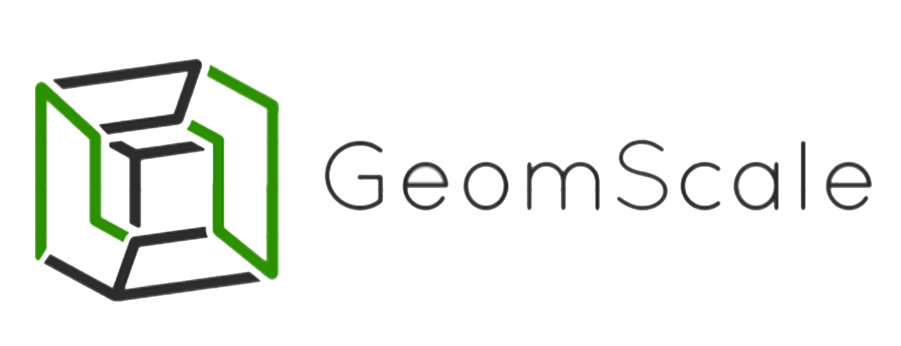

Open-source development of scalable algorithms for geometric statistics
About
GeomScale is a research and development project that delivers open source code in the intersection of data science, optimization, geometric and statistical computing.
GeomScale currently focuses in scalable algorithms for high-dimensional sampling, integration, convex optimization and their aplications.
GeomScale aims in serving as a building block for an international, interdisciplinary and open community in high dimensional geometrical and statistical computing.
The main development is currently performed in volesti, a generic open source C++ library, with R and (limited) Python interfaces, for high-dimensional sampling and volume approximation and copula estimation for financial modelling.
Sampling from multidimensional distributions is a fundamental operation that plays a crucial role across sciences including modern machine learning and data science. Problems such as optimization and integration can be efficiently solved via sampling.
Volume computation is a fundamental and computationally hard problem, a special case of integration.
volesti provides functionality for high-dimensional copula estimation that is useful but not limited to modelling financial crises.
People
- Vissarion Fisikopoulos, coordinator
- Apostolos Chalkis
- Elias Tsigaridas
Contributors
Collaborations:
- ErGA lab at National and Kapodistrian University of Athens, Greece
- Ouragan team at National Institute for Research in Digital Science and Technology, France
- ALCYON lab at Gebze Technical University, Turkey
Software


Projects using volesti
P.Z.D. Martires, Samuel Kolb - Monte Carlo Anti-Differentiation for Approximate Weighted Model Integration, 2019
A. Venzke, D.K. Molzahn, S. Chatzivasileiadis - Efficient Creation of Datasets for Data-Driven Power System Applications, 2019
Google Summer of Code
GeomScale is applying this year to be an organization for GSoC 2020. See this wiki for more details.
Members of GeomScale has succesfully participated in GSoC in the past with the R-project for statistical computing.
- Efficient R tools for geometrical statistics, 2018
- Sampling Methods for Convex Optimization, 2019
- State-of-the-art geometric random walks in R, 2019
Dissemination and Public Talks
V Fisikopoulos - High Dimensional Sampling and Volume Computation in volesti at PyData Piraeus and Declarative Languages and Artificial Intelligence research group KULeuven, 2020.
A. Chalkis - Volesti: an R package for high-dimensional sampling and integration, eRum Milan 2020 (todo).
V. Fisikopoulos - A new practical algorithm for volume estimation using annealing of convex bodies, Université libre de Bruxelles, 2019.
A. Chalkis - Volume computation and financial crises, SoCG Bupadest, 2018.
V. Fisikopoulos - Efficient R tools for geometrical statistics, GSoC Mentor Summit US, 2018.
V. Fisikopoulos - Volume computation and applications, Newcastle University UK, 2017.
V. Fisikopoulos - Efficient Random-Walk Methods forApproximating Polytope Volume , SoCG Japan, 2014.
Publications
A. Chalkis, I.Z. Emiris, V. Fisikopoulos - Practical Volume Estimation by a New Annealing Schedule for Cooling Convex Bodies. Under submission, 2019.
L. Cales, A. Chalkis, I.Z. Emiris, V. Fisikopoulos - Practical volume computation of structured convex bodies, and an application to modeling portfolio dependencies and financial crises. Proceedings of Annual Symposium on Computational Geometry, 2018.
I.Z.Emiris, V.Fisikopoulos - Practical polytope volume approximation. ACM Transactions on Mathematical Software, vol 44, issue 4, 2018.
E. Anagnostopoulos, I.Z. Emiris, V. Fisikopoulos - Polytope Membership in High Dimension. LNCS Proceedings of 5th International Symposium on Combinatorial Optimization, 2018.
I.Z. Emiris, V. Fisikopoulos - Efficient random-walk methods for approximating polytope volume. Proceedings of 30th ACM Annual Symposium on Computational Geometry, 2014.